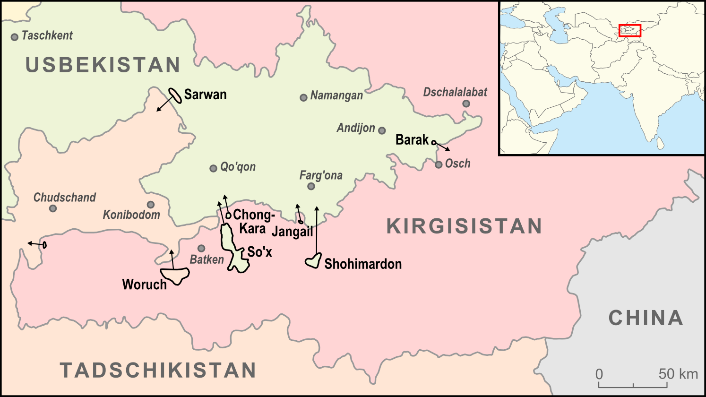

Fergana Valley, spanning across this region, is home to many post-Soviet exclaves and enclaves. Image Source
Imagine living in a village of under 1000 residents with no post office, no government building, no post-primary educational institutions, and no easy way to leave. This is what residents of Barak (no, not Barack), an enclave of Kyrgyzstan located in Uzbekistan have to endure. To make matters worse, the Kyrgyz government wants the residents to remain in that exclave1, which is only 1.5 kilometers away from Kyrgyzstan proper.
The exclave of Barak is not uncommon for the region. The border area between Uzbekistan, Tajikistan, and Kyrgyzstan is perhaps one of the more complicated border areas. There are 4 Uzbek enclaves in Kyrgyzstan, 1 Kyrgyz enclave2 in Uzbekistan, 1 Tajik enclave in Uzbekistan, and 2 Tajik enclaves in Kyrgyzstan. When they were all part of the USSR, borders did not matter much as they were all constituents of a larger state. Russian is a common language between the ethnic groups populating the countries, namely Uzbek, Tajik, and Kyrgyz people, and they shared farmland and other resources, but not much culture and tradition were mixed as intermarriages and other forms of inter-ethnic social relations were rare. After the split of the Soviet Union, and divisions among ethnic lines arose, the region became turbulent with ethnic strifes. Arguments over land-use and occupation in the poorly delimited countries led to the various enclaves we see today.
Map showing the exclaves and enclaves of the region. Image Source
Because of existing tensions between the nations, life in these enclaves difficult. One particular enclave that highlights this trouble is Barak. Barak, like many other enclaves in the area, was formed by a farming community of one ethnic group, Kyrgyz, that ended up being on the wrong side of the border. The town only has a primary school and a small shop. There are no government buildings, banks, or hospitals. Despite only being a short distance from the main country, this Kyrgyz exclave is heavily patrolled by Uzbek border security. Residents report that the security give them a difficult time while exiting and entering Uzbekistan. When the residents asked the Kyrgyz government to help permanently resettle them in the main country, the government was hesitant to help as this would lead to them losing that small piece of land. The situation in Barak is almost as if the residents are living in isolation. This displays the dire effect improper border definition can have on local communities.
D.T. "The Post-imperial Chessboard." The Economist. The Economist Newspaper, 02 Apr. 2014. Web. 14 June 2017.
Kimsanov, Mirlan. "Residents of Kyrgyz Enclave in Uzbekistan Feel Like Castaways." EurasiaNet.org. N.p., 5 June 2003. Web. 14 June 2017.
Myrzabekova, Altynai, and Inga Sikorskaya. "Enclave Issues Challenge Uzbek, Kyrgyz Leaders." Institute for War and Peace Reporting, 15 Feb. 2013. Web. 14 June 2017.
1A region of the country that is separated from it by foreign land
2A region of foreign territory surrounded by a country
{kind=link}
{kind=link}